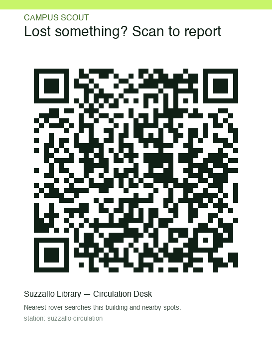
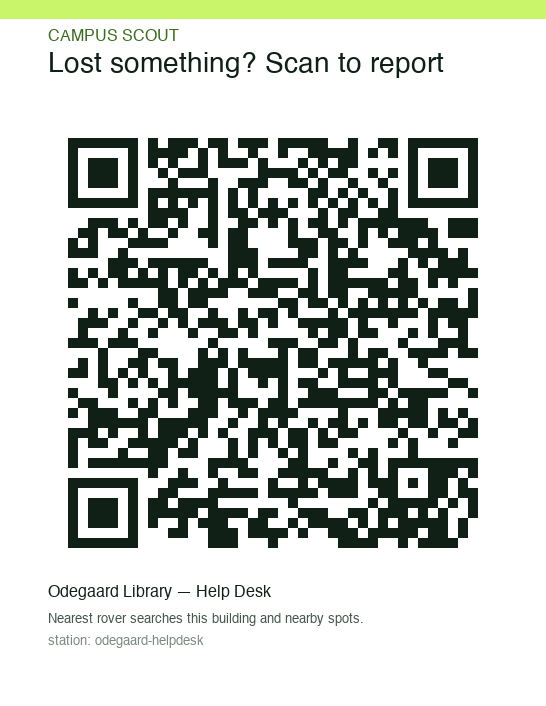
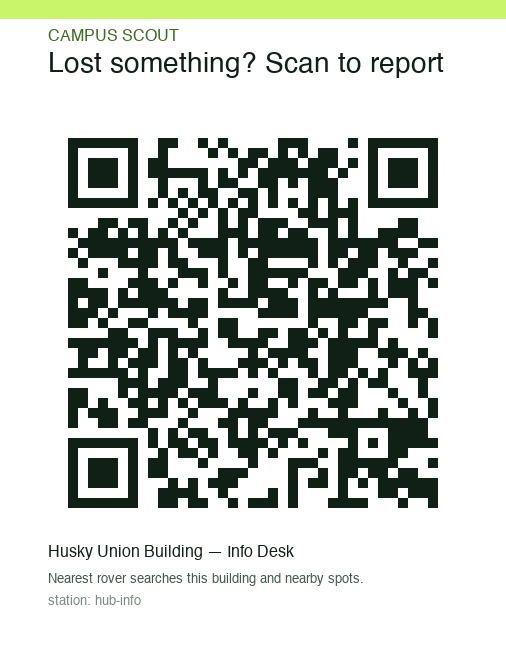
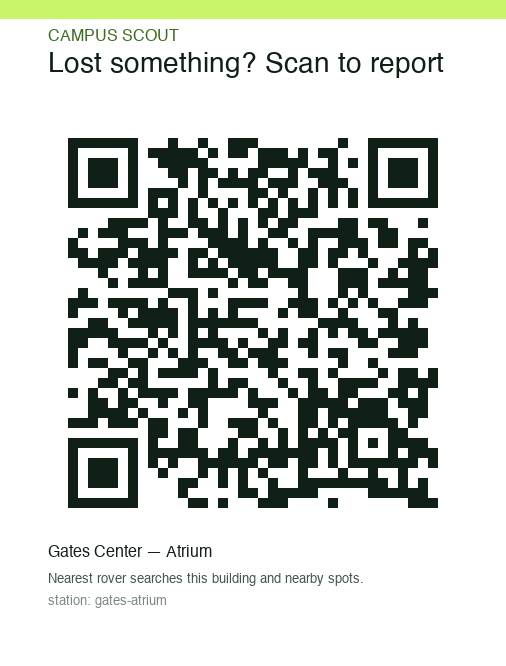
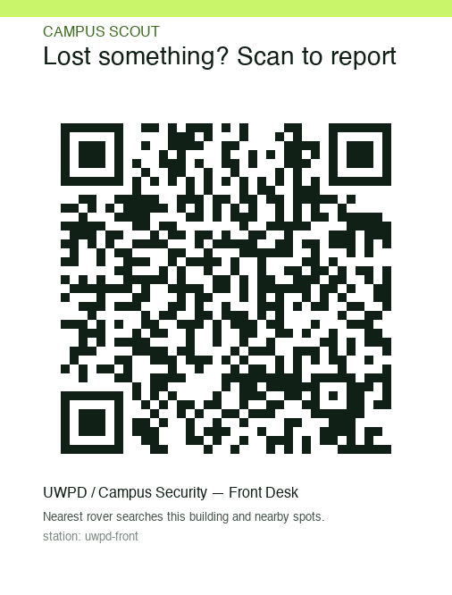
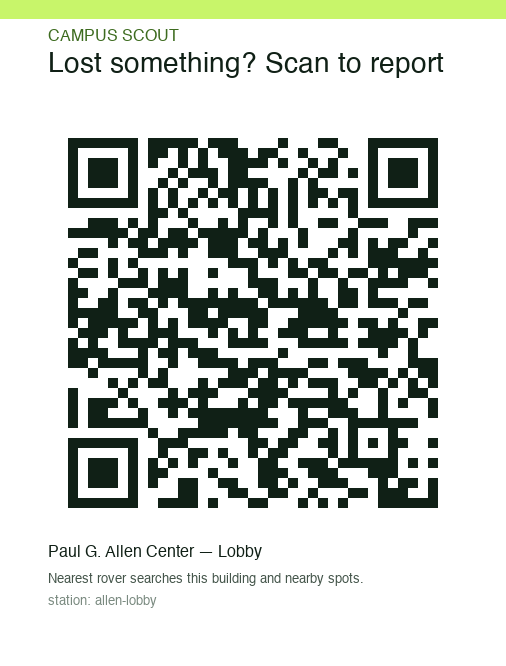

Generated for http://172.16.0.2:8787. If the public URL changes, re-run
python tools/make_qr.py --url … and reprint.

http://172.16.0.2:8787/?station=suzzallo-circulation
http://172.16.0.2:8787/?station=odegaard-helpdesk
http://172.16.0.2:8787/?station=hub-info
http://172.16.0.2:8787/?station=gates-atrium
http://172.16.0.2:8787/?station=uwpd-front
http://172.16.0.2:8787/?station=allen-lobby